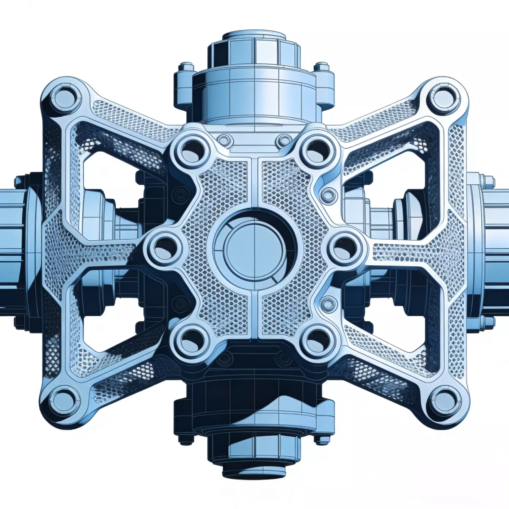
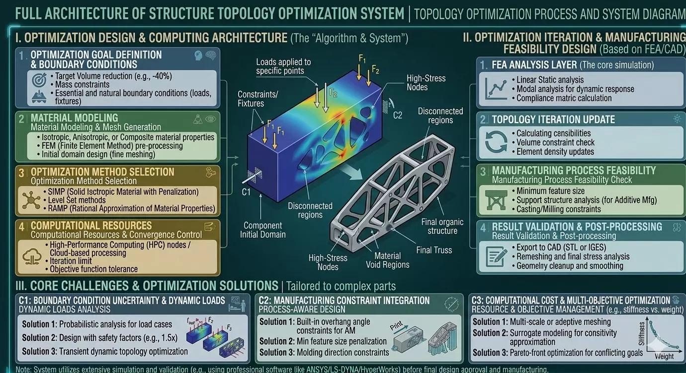
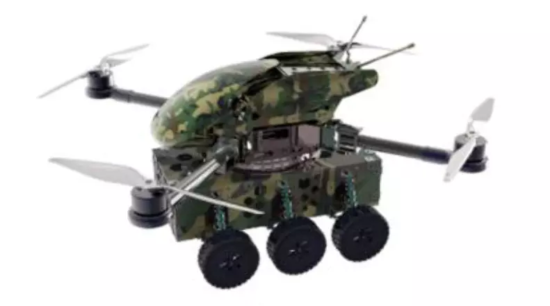
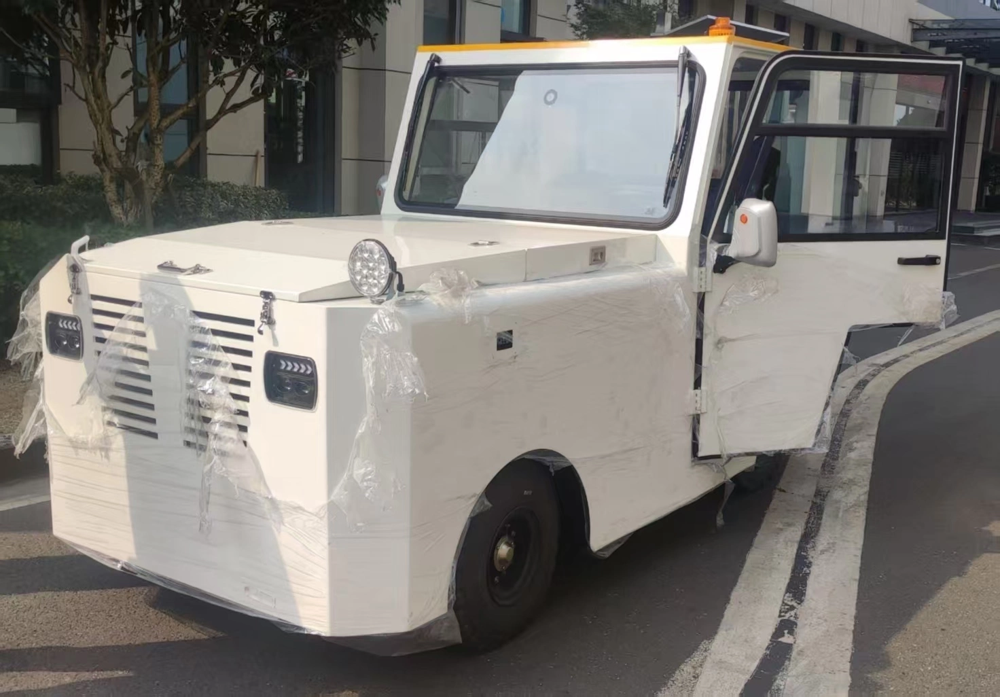
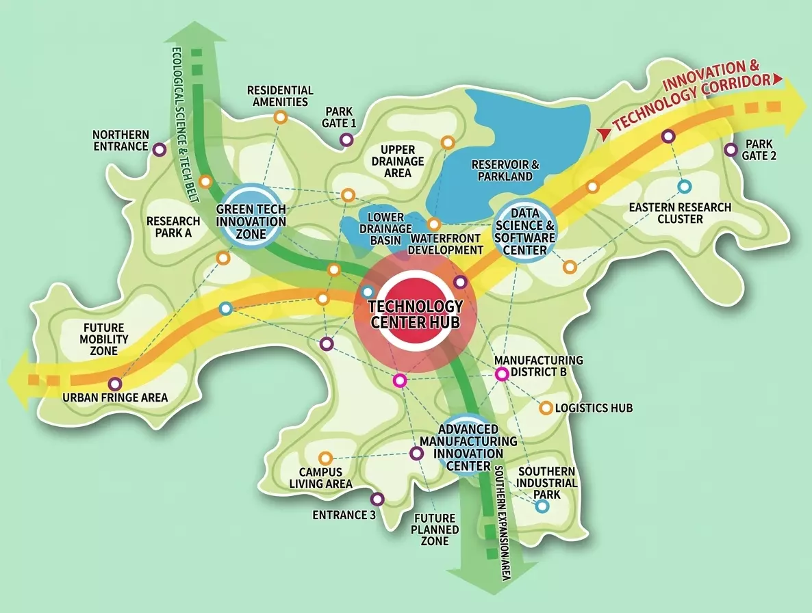

Pioneering the Future of
Industrial Structural Integrity.
産業構造の健全性を再定義する、
次世代エンジニアリング。
HUIREN RESEARCH is a premier engineering institution focused on high-stakes industrial applications. We specialize in the convergence of advanced materials science, computational optimization, and autonomous deployment systems.
HUIREN RESEARCH（慧仁研究グループ）は、高難度の産業応用に特化した独立系工学研究機関です。先端材料科学、計算機による構造最適化、および自律配備システムの融合を追求しています。
Structural Optimization
構造最適化・解析
We employ generative design and multiphysics topology optimization to redefine mass-to-stiffness ratios. Our protocol integrates high-fidelity Finite Element Analysis (FEA) to ensure that aerospace-grade components maintain integrity under extreme thermomechanical stress, achieving up to 40% weight reduction without compromising safety.
ジェネレーティブデザインとマルチフィジックス・トポロジー最適化を駆使し、剛性対質量比を再定義します。高精度な有限要素解析（FEA）を統合し、航空宇宙グレードの部品が極限の熱力学的ストレス下でも健全性を維持することを保証。安全性を損なうことなく最大40%の軽量化を実現します。


Autonomous Platforms
自律型モビリティ基盤
Development of full-stack autonomous solutions for non-permissive and unstructured environments. By synthesizing proprietary LiDAR-based SLAM algorithms with multispectral sensor fusion, we create robotic systems capable of precise navigation in GPS-denied zones. From rugged chassis architecture to real-time kinetic control, we ensure mission-critical reliability.
非許容・非定型環境向けの実戦的なフルスタック自律ソリューションを開発。独自のLiDARベースSLAMアルゴリズムとマルチスペクトル・センサーフュージョンを合成し、GPSが利用不可能な空間でも精密なナビゲーションが可能なロボットシステムを構築。堅牢なシャーシ設計からリアルタイム動態制御まで、極限の信頼性を提供します。


Technical Fulfillment
技術供給・プロトタイピング
Bridging the gap between conceptual CAD blueprints and field-ready deployment. Our technical fulfillment protocol utilizes a decentralized manufacturing network to provide rapid, discreet prototyping of complex engineering systems. We adhere to rigorous international quality standards, ensuring seamless transition from research lab to industrial scale-up.
概念的なCAD設計図と現場での実戦配備のギャップを埋めます。分散型製造ネットワークを活用し、複雑な工学システムの迅速かつ機密性の高いプロトタイピングを実現。厳格な国際品質基準を遵守し、研究ラボから産業用スケールアップへのシームレスな移行を確実にします。
